File: 000710.gt.txt (if the image is defective, simply delete all Arabic text and the line will be excluded)

وقال بصريون : هو فيعل [622 ] واحتجوا بأنه قد يبنى للمعتل بناء لا
File: 000711.gt.txt (if the image is defective, simply delete all Arabic text and the line will be excluded)

يكون للصحيح ، قالوا : قضاة وغزاة ورماة ، فجمعوه على « فعلة » ولا
File: 000712.gt.txt (if the image is defective, simply delete all Arabic text and the line will be excluded)

يجمعون غير المعتل على ذلك ، فالمعتل جنس على حياله ، والسالم جنس
File: 000713.gt.txt (if the image is defective, simply delete all Arabic text and the line will be excluded)

على حياله(4) .
File: 000714.gt.txt (if the image is defective, simply delete all Arabic text and the line will be excluded)

قالوا(5) : و« فعليل » قليل في الكلام ، قالوا : « غرنيق » لضرب من
File: 000715.gt.txt (if the image is defective, simply delete all Arabic text and the line will be excluded)

طير الماء ، قال(6) : وهو صفة .
File: 000716.gt.txt (if the image is defective, simply delete all Arabic text and the line will be excluded)

عليهم أن يشددوا العين وبعدها ساكن كأنه ألف إعراب ، فخففوا الشديدة(1)
File: 000717.gt.txt (if the image is defective, simply delete all Arabic text and the line will be excluded)
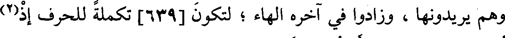
وهم يريدونها ، وزادوا في آخره الهاء ؛ لتكون [639] تكملة للحرف إذ(2)
File: 000718.gt.txt (if the image is defective, simply delete all Arabic text and the line will be excluded)

و« العفي » في العفاة لكنت مصيبا .
File: 000719.gt.txt (if the image is defective, simply delete all Arabic text and the line will be excluded)

قال البصريون في تقدير « أشياء »(4) : هي فعلاء، نقلت همزتها إلى
File: 000720.gt.txt (if the image is defective, simply delete all Arabic text and the line will be excluded)
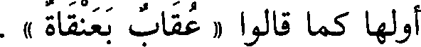
أولها كما قالوا « عقاب بعنقاة » .
File: 000721.gt.txt (if the image is defective, simply delete all Arabic text and the line will be excluded)

قال الفراء : ولم أجد(5) لهم في ذلك مذهبا يشبه وجه العربية ؛ لأنهم
File: 000722.gt.txt (if the image is defective, simply delete all Arabic text and the line will be excluded)
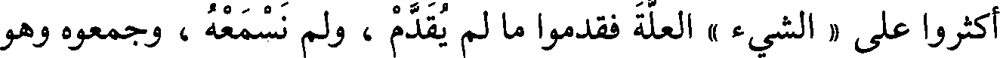
أكثروا على « الشيء » العلة فقدموا ما لم يقدم ، ولم نسمعه ، وجمعوه وهو
File: 000723.gt.txt (if the image is defective, simply delete all Arabic text and the line will be excluded)
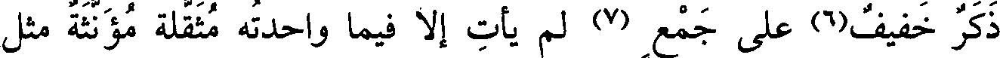
ذكر خفيف(6) على جمع (7) لم يأت إلا فيما واحدته مثقلة مؤنثة مثل
File: 000724.gt.txt (if the image is defective, simply delete all Arabic text and the line will be excluded)

« القصبة » و« القصباء » ، و« الشجرة » و« الشجراء » و « الطرفة »
File: 000725.gt.txt (if the image is defective, simply delete all Arabic text and the line will be excluded)

و« الطرفاء » .
File: 000726.gt.txt (if the image is defective, simply delete all Arabic text and the line will be excluded)

وقال الفراء : قال الكسائي وغيره من أصحابنا : إنما ترك إجراؤها لأنها
File: 000727.gt.txt (if the image is defective, simply delete all Arabic text and the line will be excluded)

شبهت بفعلاء ، وكثرت في الكلام حتى جمعت « أشياوات » كما جمعوا
File: 000728.gt.txt (if the image is defective, simply delete all Arabic text and the line will be excluded)

الفعلاء على الفعلاوات .
File: 000729.gt.txt (if the image is defective, simply delete all Arabic text and the line will be excluded)

قال الفراء : أصل شيء (8) « شيء » على مثال شيع ، ثم جمع على
File: 000730.gt.txt (if the image is defective, simply delete all Arabic text and the line will be excluded)

مفعل ومفعل
File: 000731.gt.txt (if the image is defective, simply delete all Arabic text and the line will be excluded)
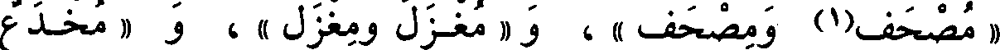
« مصحف(1) ومصحف » ، و « مغزل ومغزل » ، و « مخدع
File: 000732.gt.txt (if the image is defective, simply delete all Arabic text and the line will be excluded)

ومخدع » ، و « مطرف ومطرف » ، و « مجسد ومجسد » .
File: 000733.gt.txt (if the image is defective, simply delete all Arabic text and the line will be excluded)

قال بعضهم(2) : المجسد : ما صبغ بالجساد فأجيد وأشبع صبغه ،
File: 000734.gt.txt (if the image is defective, simply delete all Arabic text and the line will be excluded)
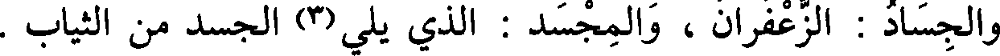
والجساد : الزعفران ، والمجسد : الذي يلي (3) الجسد من الثياب .
File: 000735.gt.txt (if the image is defective, simply delete all Arabic text and the line will be excluded)
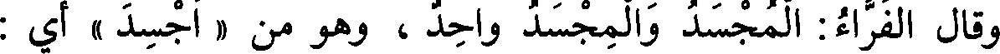
وقال الفراء : المجسد والمجسد واحد ، وهو من « أجسد » أي:
File: 000736.gt.txt (if the image is defective, simply delete all Arabic text and the line will be excluded)

ألزق(4) بالجلد ، فكسر أوله بعضهم(5) استثقالا للضم ، وكذلك قالوا
File: 000737.gt.txt (if the image is defective, simply delete all Arabic text and the line will be excluded)

« مصحف » وهو مأخوذ [ 580 ] ممن « أصحف » أي : جمعت فيه
File: 000738.gt.txt (if the image is defective, simply delete all Arabic text and the line will be excluded)
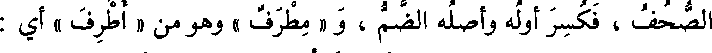
الصحف ، فكسر أوله وأصله الضم ، و « مطرف » وهو من « أطرف » أي :
File: 000739.gt.txt (if the image is defective, simply delete all Arabic text and the line will be excluded)
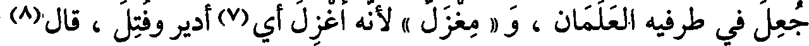
جعل في طرفيه العلمان ، و « مغزل » لإنه أغزل أي(7) أدير وفتل ، قال(8)
File: 000740.gt.txt (if the image is defective, simply delete all Arabic text and the line will be excluded)

فمن ضم الحرف من هذه جاء به على أصله ، ومن كسره فلاستثقاله الضمة .
File: 000741.gt.txt (if the image is defective, simply delete all Arabic text and the line will be excluded)

مفعل ومفعل
File: 000742.gt.txt (if the image is defective, simply delete all Arabic text and the line will be excluded)
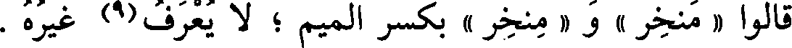
قالوا « منخر » و « منخر » بكسر الميم ؛ لا يعرف(9) غيره .
File: 000743.gt.txt (if the image is defective, simply delete all Arabic text and the line will be excluded)

قال الفراء(1) : ومن الشاذ قولهم للرجل « حيوة » ، وللقط
File: 000744.gt.txt (if the image is defective, simply delete all Arabic text and the line will be excluded)

« ضيون » .
File: 000745.gt.txt (if the image is defective, simply delete all Arabic text and the line will be excluded)

وقال سيبويه(2) : قالوا « أرقت الماء » ثم(3) أبدلوا من الهمزة هاء ،
File: 000746.gt.txt (if the image is defective, simply delete all Arabic text and the line will be excluded)

فقالوا : « هرقت الماء(4) » .
File: 000747.gt.txt (if the image is defective, simply delete all Arabic text and the line will be excluded)

وقال الفراء : والهمزة تبدل منها الهاء في أول الحرف كثيرا ؛ قالوا
File: 000748.gt.txt (if the image is defective, simply delete all Arabic text and the line will be excluded)

« هبرية » وأصلها « إبرية » ، وقالوا « هنرت » وأصله « أنرت » ،
File: 000749.gt.txt (if the image is defective, simply delete all Arabic text and the line will be excluded)

و « هرحت »(5) وأصله « أرحت » ، و « هرقت » والأصل(6) « أرقت » .
File: 000750.gt.txt (if the image is defective, simply delete all Arabic text and the line will be excluded)

قال سيبويه(7) : ثم لزمت الهاء فصارت كأنها من نفس الحرف ، ثم
File: 000751.gt.txt (if the image is defective, simply delete all Arabic text and the line will be excluded)

أدخلت الألف بعد(8) على الهاء، وتركت الهاء عوضا من حذفهم العين ؛
File: 000752.gt.txt (if the image is defective, simply delete all Arabic text and the line will be excluded)
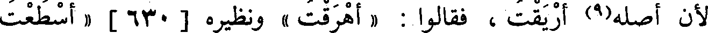
لأن أصله(9) أريقت ، فقالوا : « أهرقت » ونظيره [630] « أسطعت
File: 000753.gt.txt (if the image is defective, simply delete all Arabic text and the line will be excluded)

تسطيع » .
File: 000754.gt.txt (if the image is defective, simply delete all Arabic text and the line will be excluded)
قال الفراء : توهموا أن قولهم « أسطعت » أفعلت لأنـه بوزنها(10).
File: 000755.gt.txt (if the image is defective, simply delete all Arabic text and the line will be excluded)

وقال الأحمر :يقال(11) « مششت الدابة » بإظهار التضعيف ، ليس في
File: 000756.gt.txt (if the image is defective, simply delete all Arabic text and the line will be excluded)

فعلة بالواو والياء
File: 000757.gt.txt (if the image is defective, simply delete all Arabic text and the line will be excluded)
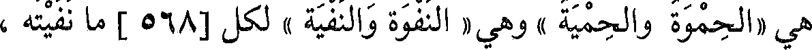
هي «الحموة والحمية » ، وهي « النفوة والنفية » لكل [568] ما نفيته ،
File: 000758.gt.txt (if the image is defective, simply delete all Arabic text and the line will be excluded)

وحاف بين « الحفية والحفوة » و« قنية وقنوة » للشيء تقتنيه .
File: 000759.gt.txt (if the image is defective, simply delete all Arabic text and the line will be excluded)

فعلة بالياء ، وأصلها بالواو(1)